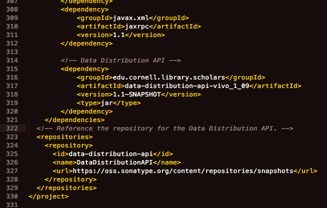

The main installation instructions describe how to install the latest stable release of the Data Distribution API.
The instructions below describe how to install the latest (not stable) snapshot.
The difference is in the pom.xml file, which requires
Other installation steps are unchanged.
There are many <dependency> tags within the <dependencies> section of pom.xml. Add another dependency:
<!-- Data Distribution API -->
<dependency>
<groupId>edu.cornell.library.scholars</groupId>
<artifactId>data-distribution-api-vivo_1_10</artifactId>
<version>1.1-SNAPSHOT</version>
<type>jar</type>
</dependency>
There are no <repository> tags in pom.xml. Add one, telling Maven where to find the Data Distribution API:
<!-- Reference the repository for the Data Distribution API. -->
<repositories>
<repository>
<id>data-distribution-api</id>
<name>DataDistributionAPI</name>
<url>https://oss.sonatype.org/content/repositories/snapshots</url>
</repository>
</repositories>
Before editing, you might see this at the end of pom.xml:

After editing, you would see this:

The difference is in the pom.xml file, which requires
Other installation steps are unchanged.
There are many <dependency> tags within the <dependencies> section of pom.xml. Add another dependency:
<!-- Data Distribution API -->
<dependency>
<groupId>edu.cornell.library.scholars</groupId>
<artifactId>data-distribution-api-vivo_1_09</artifactId>
<version>1.1-SNAPSHOT</version>
<type>jar</type>
</dependency>
There are no <repository> tags in pom.xml. Add one, telling Maven where to find the Data Distribution API:
<!-- Reference the repository for the Data Distribution API. -->
<repositories>
<repository>
<id>data-distribution-api</id>
<name>DataDistributionAPI</name>
<url>https://oss.sonatype.org/content/repositories/snapshots</url>
</repository>
</repositories>
Before editing, you might see this at the end of pom.xml:

After editing, you would see this:

The difference is in where you find the JAR file. You must
Other installation steps are unchanged.
The JAR file is located in the Snapshots repository at Sonotype.org. You can browse through the directory structure to find the most recent snapshot for the API, and download the JAR file.
Alternatively, if you have Maven installed on your machine, you can use this command to fetch the most recent snapshot to the local repository on your machine:
mvn org.apache.maven.plugins:maven-dependency-plugin:get \
-DrepoUrl=https://oss.sonatype.org/content/repositories/snapshots \
-DgroupId=edu.cornell.library.scholars \
-DartifactId=data-distribution-api-vivo_1_08 \
-Dversion=1.1-SNAPSHOT \
-Dtransitive=false
When maven completes, you will find the JAR file here:
~/.m2/repository/edu/cornell/library/scholars/data-distribution-api-vivo_1_08/1.1-SNAPSHOT/data-distribution-api-vivo_1_08-1.1-SNAPSHOT.jar
Copy or move the JAR file to your project’s top-level lib directory.